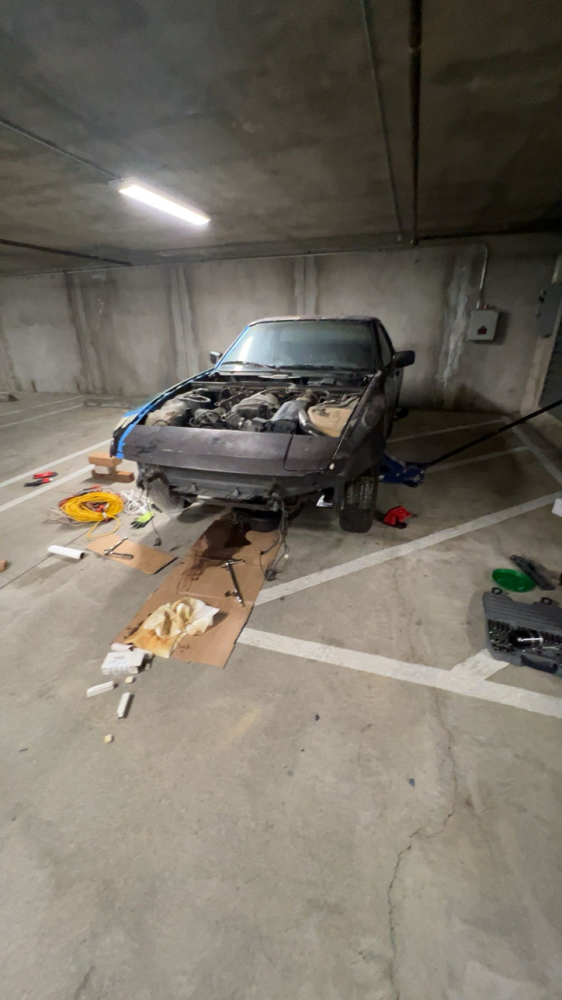
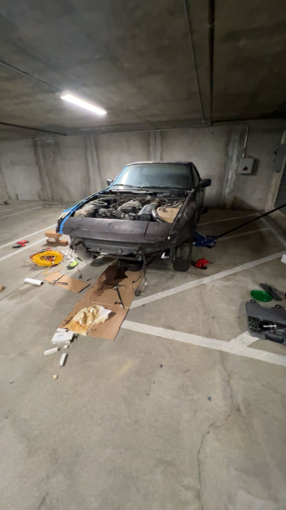

1983 Porsche 944 Restoration
Bought a 1983 Porsche 944 with a friend that has not run since the '90s with the goal to restore it.

Overview
An ongoing personal engineering project involving the full mechanical and interior restoration of a 1983 Porsche 944. The objective is to rebuild a non-running vehicle to be fully operational, with a fresh interior, while minimizing costs through self-directed research, diagnostics, and part sourcing.
Rebuild Process
After purchasing the non-functional vehicle with a friend, we inspected all the major mechanical components, identifying issues in the engine and drivetrain systems. I created a spreadsheet to track all costs of parts already purchased, as well as a prediction of the parts we might need. Using manuals and technical forums, we diagnosed engine performance issues, sourced components at 12% below market value, and documented the restoration process for future reference. We also planned an interior redesign focused on maintaining authenticity while upgrading materials for durability.
Current State
To date, the project has progressed through diagnostic and component rebuilding phases. We have restored the ignition coil, starter motor, and fuel system components. With the engine turning over but not starting, we tested compression and found that all the cylinders are below the desired value, with two of them significantly worse than the other two. We decided that we will pull the engine out and rebuild it with new components. This decision was made with the thought in mind that rebuilding an engine would teach us a great deal about its internals and help us better understand how the components interact with one another. We aim to complete the full restoration within 24 months. This project has deepened my practical understanding of mechanical systems, engine design, and hands-on problem-solving, helping to put my academic knowledge into practical use.
Gallery
 
